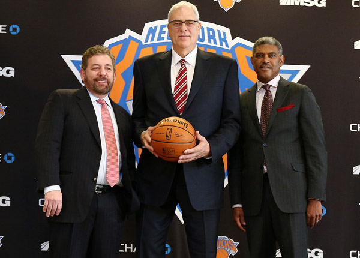
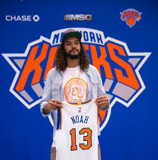
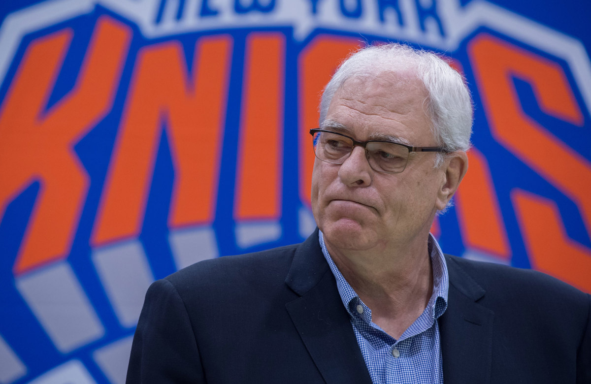
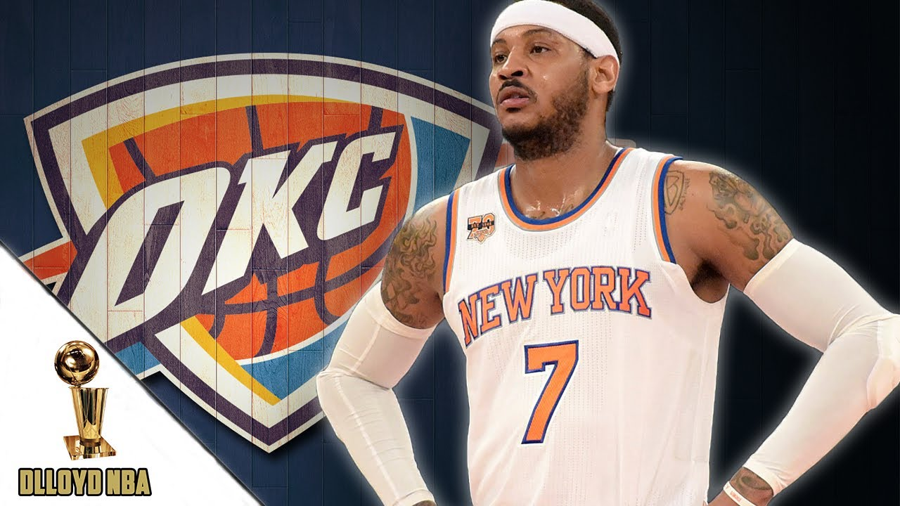
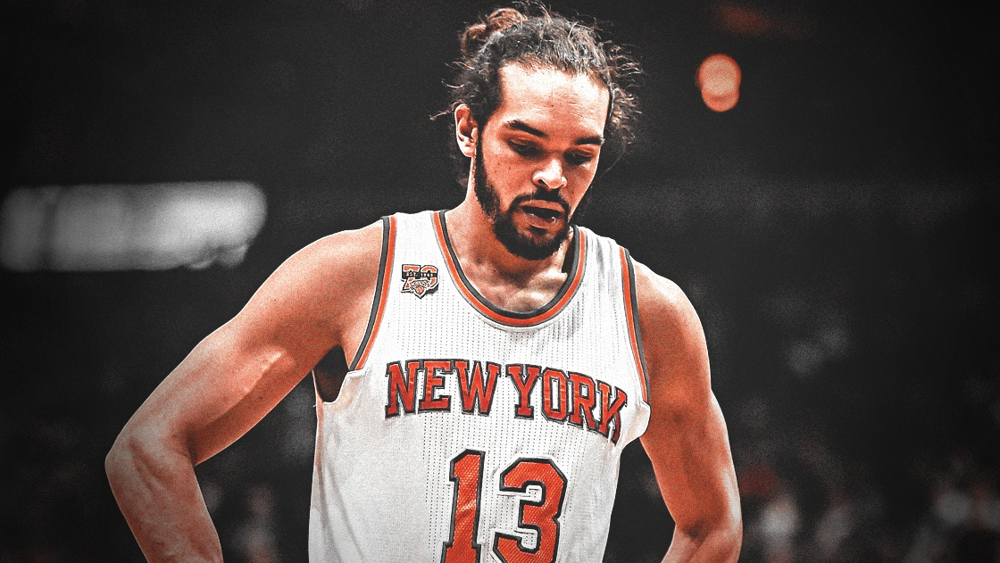

| Date | Event | Description |
|---|---|---|
| May17,2014 | Hire Phil Jackson  | The Knicks hire Phil Jackson to be the new president of basketball operation. He vows to install the triangle offense and return the Knicks to their former glory |
| July, 2016 | Sign Joakim Noah  | The Knicks signed Joakim Noah to a Four-year, 72million contract,despite widespread concerns about his knees and ability to be effective, or on the court at all |
| June, 2017 | Phil Jackson departure  | Knicks and Phil parted away after 3years |
| September, 2017 | Carmelo Anthony trade  | Knicks trade Carmelo to Oklahoma City Thunders for Enes Kanter, Doug McDermott |
| October, 2018 | Joakim Noah's release  | Knicks released Noah after 2 years of signing, Noah played only 53games averaged 4.6pts and 7.9rebounds in 19min a game |